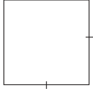
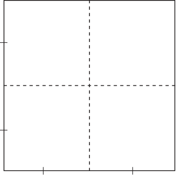
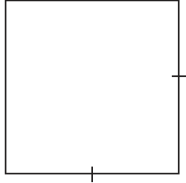
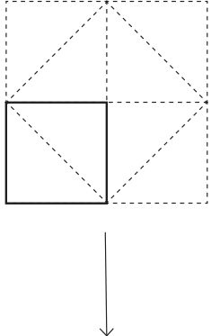
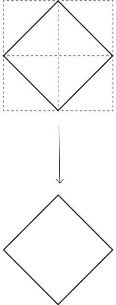
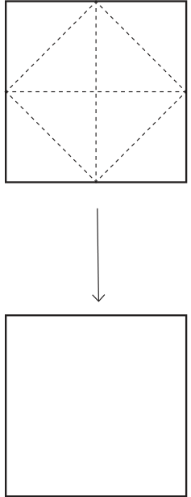
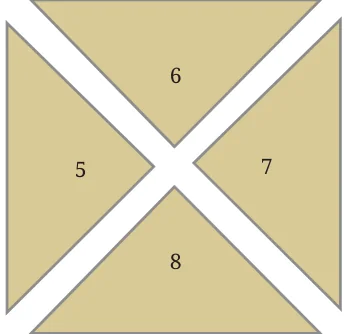
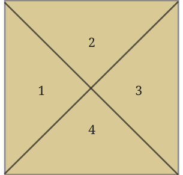

In Baudhāyana’s Śulba-Sūtra (c. 800 BCE), Baudhāyana considers the following question:
How can one construct a square having double the area of a given square? A first guess might be to simply double the length of each side of the square. Will this new square have double the area of the original square? It’s not hard to see that the new square will have area \(2 \times 2 = 4\) times the area of the original square:



So how can one make a square that has double the area? Baudhāyana in his Śulba-Sūtra (Verse 1.9) gave an elegant answer to this question:
As Baudhāyana says, the key is to construct a square on the diagonal of the original square:
Why does the new dotted square have double the area of the original square? In many of the constructions in the Śulba-Sūtra, it is desirable to construct, where needed, what Baudhāyana calls ‘east-west’ and ‘north-south’ lines, i.e., horizontal and vertical lines that are perpendicular to each other. Can you draw some horizontal and vertical lines to see why the new square has double the area of the original square? You could draw some horizontal and vertical lines as shown on the right. Why should the extension of the vertical and horizontal sides of the original square pass through the vertices of the dotted square? [Hint: From the diagonal property of a square, the line that bisects an angle passes through the opposite vertex. Argue why the vertical and horizontal sides of the original square bisect the two angles of the dotted square.] So, the new square has double the area of the original square, because the original square is made up of two small triangles, while the new square is made up of four small triangles. Moreover, all these small triangles are congruent to each other. Can you explain why? Adding some more horizontal and vertical lines can make the situation even clearer:

So we can make the following sequence of squares:



Each square has double the area of the previous one, as they are made up of 2, 4, and 8 small triangles, respectively.
Doubling a Square Using Paper
Cut out two identical squares of paper. Draw, label, and cut as follows:


Square 1 Identical Square 2
Now place the pieces 5, 6, 7, and 8 around Square 1 to get a square with double the area.